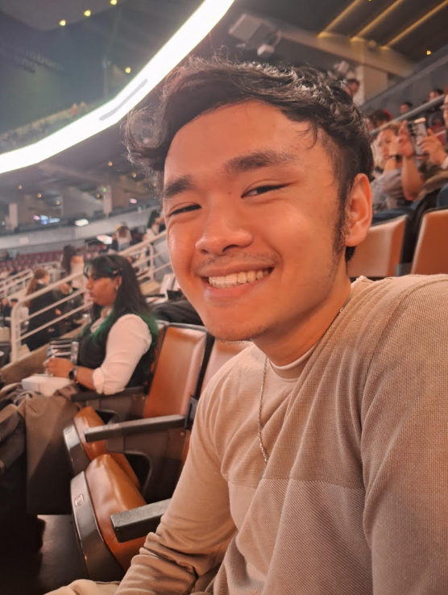

DR. CLARA COLOMBATTO, Principal Investigator
[CV]
Dr. Colombatto is an Assistant Professor at the University of Waterloo, in the School of Psychology, and an Honorary Lecturer at University College London. Prior to joining UW, Dr. Colombatto was a Research fellow at UCL. She earned a PhD in Psychology at Yale University, and a BS in Neuroscience and Philosophy from Duke University. Dr. Colombatto's research uses methods from vision science, cognitive psychology, and social psychology to investigate how we perceive other agents and their mental states.

DR. TRENT CASH, Postdoctoral Fellow
Dr. Cash is Postdoctoral Fellow in the School of Psychology at the University of Waterloo. He earned a PhD in Psychology and Social & Decision Sciences from Carnegie Mellon University and a BA in Psychology and Public Management, Leadership, and Policy from The Ohio State University. Dr. Cash's research focuses on the role that metacognition plays in complex reasoning tasks - such as judgment and decision making - for both humans and artificially intelligent agents.
CAROLINE SIMPSON, MA Student
Caroline is a first-year master's student in cognitive psychology at the University of Waterloo. She is primarily interested in how we acquire knowledge and understanding, trust, and consciousness. Her current research is focusing on perceptions of and trust in generative artificial intelligence. Outside of the world of psychology Caroline plays bass in a band, makes art of various forms, and is obsessed with her two adorable cats.
CARTER SMITH, MA Student
Carter is a second-year master’s student investigating how the physical factors that underlie our movements, like velocity, shape other people’s inferences about our mental states. He also explores how these inferences bias human attention. Outside the lab, Carter enjoys cycling, running, reading philosophy, and watching baseball.
YUANZE HUANG, MA Student
Yuanze (David) Huang is a first-year PhD student in Cognitive Psychology. His research interests broadly focus on attention, particularly people’s intuitive theories of attention, including how people perceive others’ attention and meta-attention. David has a five-year-old Ragdoll cat named QiuZi. Outside of research, he enjoys spending time with his cat, playing video games, and snowboarding.

ANDY BANG, Honours Student
Andy is in his 4th year of Psychology (BSc) at the University of Waterloo. He is broadly interested in clinical research on self-injury, neuropsychological disorders, and how social factors can influence these phenomena. Within the lab, Andy is interested in how people use the visual system to make judgements of others' behaviours and abilities (e.g. trait inferences through facial features, visual field limits, visual perspective-taking). Outside of the lab, he is an avid tea drinker, and enjoys rock-climbing.
LILY GE, Research Assistant
Lily is a 2nd year computer science student who is looking to pursue a psychology or cognitive science minor. She is interested in human-AI interaction, particularly how AI can impact human behaviour. She also enjoys the programming aspect that goes behind running psychology studies. Outside of class, she is a member of the UW Dance Company.
JESSICA HOANG, Honours Student
Jessica is in her 3rd year of Psychology (BSc) at the University of Waterloo. She is interested in visual attention and perception in different environments, and how different mental disorders can impact social perception. In the past, she has helped with a study on attention during Instagram scrolling and research on DBT as an intervention for borderline personality disorder. In her spare time, she likes to play video games and watch scary movies.
DUNCAN WYLIE, Research Assistant
Duncan is in his third year of the Psychology program (BA) at the University of Waterloo. He is broadly interested in social perception and attention. He is currently enrolled in a Research Apprenticeship (PSYCH 264) in the lab, where he is involved in the design of a study investigating people’s judgements of others’ attention calibration. In his spare time, Duncan enjoys exploring new hobbies, such as trying different sports and games, and producing music.
Alumni
Hannah Chung (Honours Student, 2025-26)
Matthew Yeung (Research Assistant, 2025; after UW: PhD student at the University of Toronto)
Layla Hussain (Honours Student, 2024-25; after UW: MA student at Western University)
Simran Bal (Honours Student, 2024-25)
Daniela Pasqualini (Honours Student, 2024; after UW: MA student at the University of British Columbia)
Irsa Duka (Directed Studies Student, 2024)
Aarifah Panchbhaya (Honours Student, 2024)
Amy Delia Younesi (Honours Student, 2024; after UW: MA student at Wilfrid Laurier University)
Collaborators
Jonathan Birch, London School of Economics [web] Francesca Capozzi, UQAM [web] Molly Crockett, Princeton University [web] Jim AC Everett, University of Kent [web] Steve Fleming, University College London [web] Nick Hawes & Ingmar Posner, University of Oxford [web] Michel Maréchal & Julien Senn, University of Zürich [web] Jelena Ristic, McGill University [web] Brian Scholl, Yale University [web] Walter Sinnott-Armstrong, Duke University [web] Lev Tankelevitch & Sean Rintel, Microsoft Research [web] Ben van Buren, New School for Social Research [web]